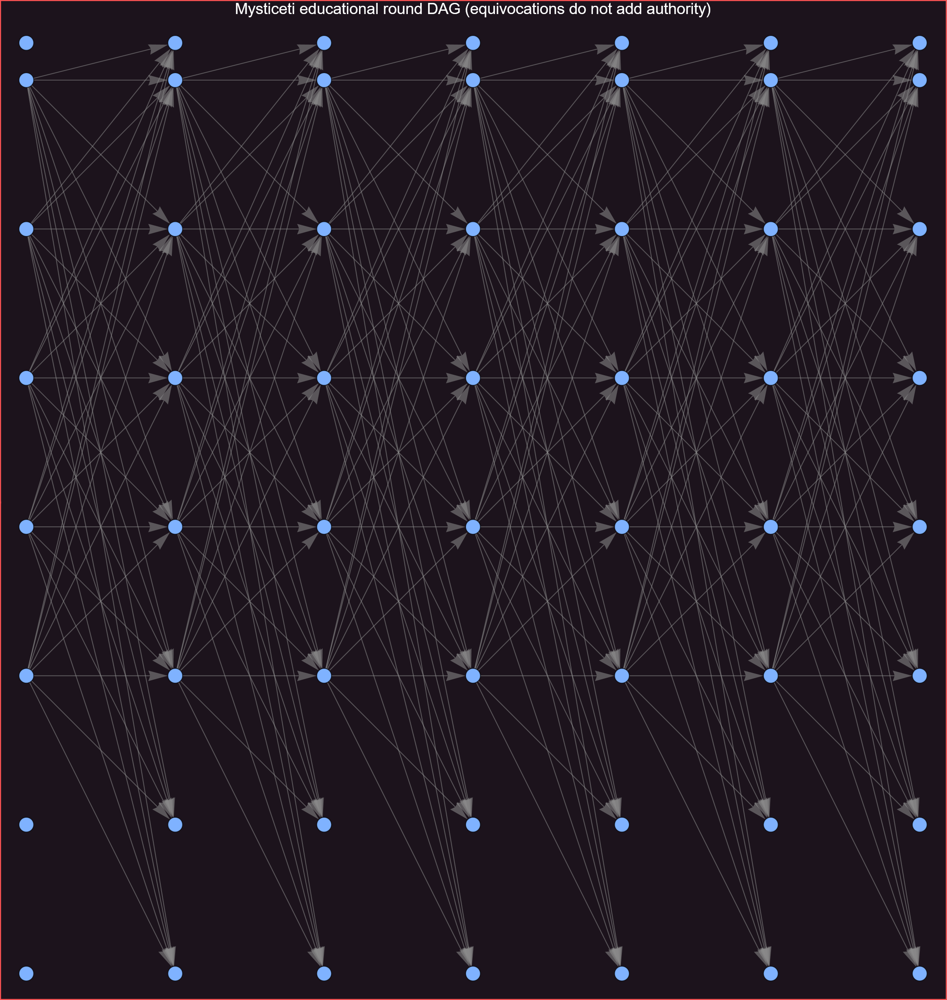
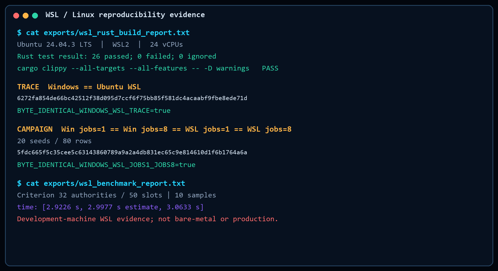
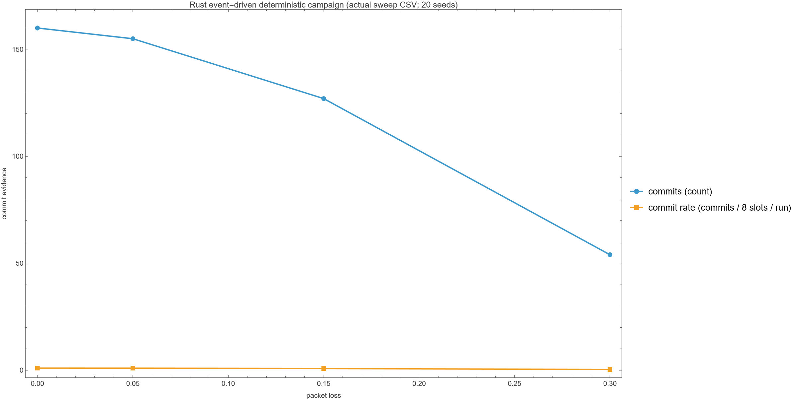
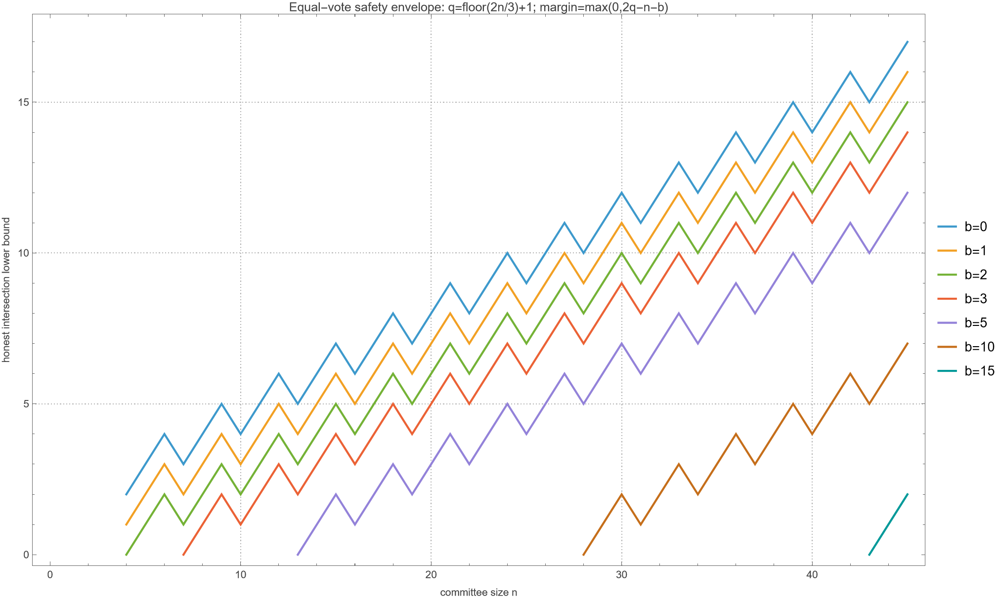
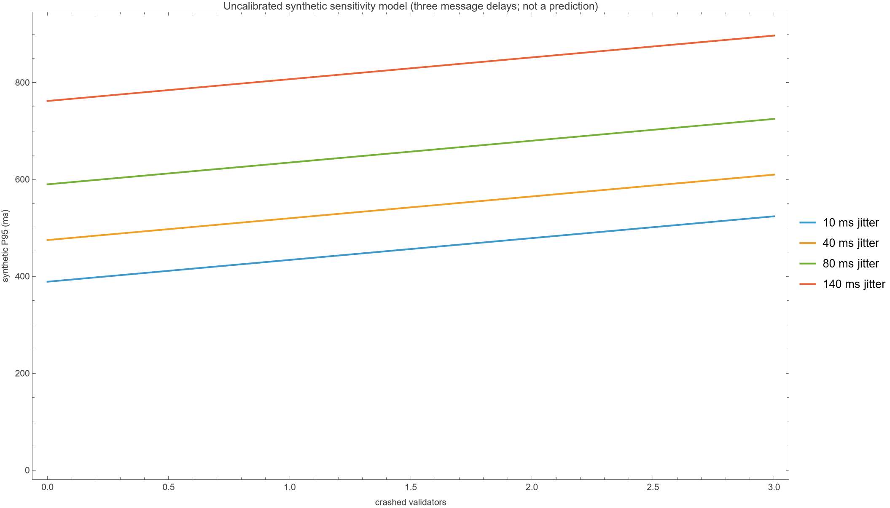
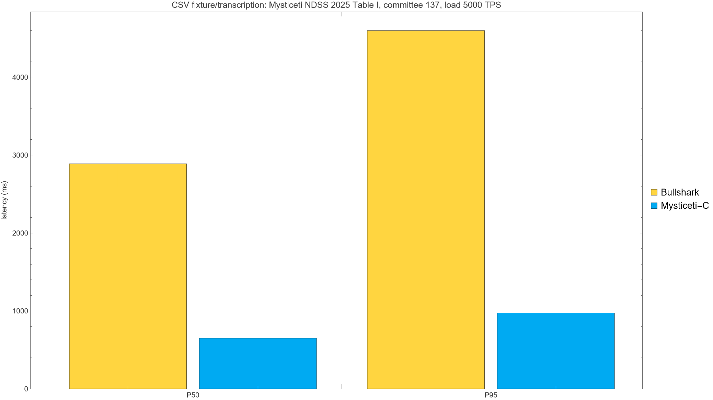

An executable + formally bounded microscope for the quorum and direct-decision core behind production Sui Layer-1 consensus.
A research result with a real deployment path - and an unusually sharp latency target.
arxiv.org/abs/2310.14821 · ndss-symposium.org/ndss-paper/mysticeti · docs.sui.io/.../consensus
The challenge is not generating output - it is preventing evidence from silently changing meaning.
| Claim lane | What it is | Evidence method | Status |
|---|---|---|---|
| Paper claim | What the authors state | citation + normalized claim | TRACEABLE |
| Rust digital twin | What bounded traces execute | event-driven replay + audit | TRACEABLE |
| Formal proof | What follows from assumptions | Lean kernel-checked theorem | TRACEABLE |
| Reported data | What Table I reports | local CSV transcription | TRACEABLE |
| Production Sui | What deployed Sui does | public sources; parity not claimed | OUT OF SCOPE |
Rust executes traces, Mathematica explores and audits, Lean proves bounded mathematics.
Confidence is attached to the exact statement, not inherited by neighboring protocol claims.
Rounds run left-to-right in the source graphic; validator lanes and authority identity govern every count.

The generated fixture explicitly checks parent references and distinct parent authorities.
The model separates evidence at r, r+1, and r+2 so “I saw support” cannot become accidental finality.
A developer changes assumptions, predicts the outcome, then receives inspectable evidence - not a magic score.
Every transition is deterministic; every recorded claim can be replayed and independently audited.
inputs → receiver-specific events → local DAG transitions → decisions → invariant evidence → strict replay
The simulator models causal consequences, not just labels attached after a global DAG is built.
Actual Windows + Ubuntu WSL reports: tests, clippy, trace replay, deterministic campaigns, and Criterion evidence.

Independent scenario concurrency changes timing and interleaving - never canonical evidence ordering.
5fdc665f5c35cee5c63143860789a9a2a4db831ec65c9e814610d1f6b1764a6a6272fa854de66bc42512f38d095d7cc6f75bb85f581dc4acaabf9fbe8ede71d20 seeds × 4 loss levels = 80 rows; dedicated Rayon pool across independent deterministic scenarios.

Deterministic package APIs feed notebook exploration, fixtures, plots, CSV evidence, and release reports.
GenerateMysticetiDAGSupportedProposalCertificateEvidenceDirectSlotDecisionRunValidationSuiteThe kernel proves finite counting under equal voting power - then exposes the honest-node obligation.
Names are part of the audit trail. Green states what is proved; the right edge states what is not.
quorum_intersection_at_least_f_add_oneTwo 2f+1 quorums inside 3f+1 overlap by ≥ f+1.quorum_intersection_contains_honestWith ≤ f Byzantine, the intersection contains an honest validator.lemma5_at_most_one_certified_block_per_slotSame-slot certificates coincide, given honest single-support.conflicting_transactions_cannot_both_gather_quorumsConflicting transactions cannot both gather quorums, given honest no-double-vote.This chart is exact for the equal-authority abstraction; the margin is max(0, 2q − n − b).

The model asks “how does the response move?” - never “what will production latency be?”

3 × base delay
+ Gaussian jitter
+ 45 ms / crash
+ 25 ms / Byzantine
≥ 250 seeded samplesNDSS 2025 Table I · committee 137 · offered load 5,000 TPS. Values are checked against a local CSV fixture.

The theorem is small. The implementation obligations it exposes are concrete.
Rust executes and replays; Wolfram conforms and visualizes; Lean checks the mapped theorem.
Proposed 16-week plan: reuse the experiment machinery, but keep every protocol’s state machine, assumptions, and proofs explicit.
Narwhal is modeled as a composable dissemination/mempool subsystem - not mislabeled as standalone consensus.
Sequence by learning value: establish trusted CFT baselines, then classic/chained BFT, then the DAG stack and cross-protocol evidence.
Planning principle: shared infrastructure, never a “universal proof.” Every adapter ships with its own semantics, invariants, exclusions, and evidence.
Rust executes and replays. Wolfram explores and audits. Lean proves bounded mathematics. Amp orchestrates the evidence gate.
Independent bounded research demo; not affiliated with or endorsed by Mysten Labs or Sui. Lean proves mapped mathematics, not the Rust binary.